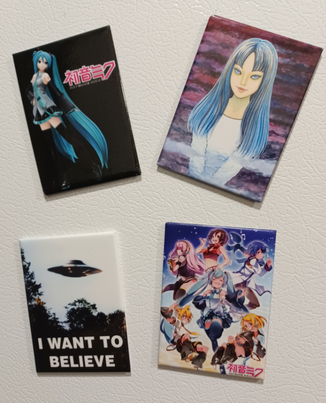

About Us
At Space Legion, we champion the protection of digital privacy as a fundamental right in today's interconnected cosmos. Founded with a mission to safeguard every individual's online universe, we stand as pioneers in open-source solutions dedicated to fortifying the digital frontier. Our journey is fueled by the belief that privacy isn't just a luxury—it's a necessity.
With a team of visionary engineers and privacy advocates, we navigate the boundless expanse of technology, pioneering innovative solutions that empower individuals and organizations to reclaim control over their digital identities. From secure communication platforms to robust data encryption tools, we harness the power of collaboration and transparency to forge a safer online landscape.
At Space Legion, we're not just protecting data; we're defending the very essence of personal freedom in the digital age. Join us as we traverse the infinite reaches of cyberspace, where privacy knows no bounds and every individual's voice is heard.
In the midst of a digital age dominated by data collectors, three friends grew weary of the relentless invasion of privacy. Fueled by frustration, they envisioned a sanctuary where individuals could reclaim their digital autonomy. Thus, Space Legion was born—a community dedicated to empowering others to live a peaceful, privacy-focused life. With determination and unity, they forged a path towards a future where privacy is not a luxury, but a fundamental right for all.
-
Lead Developer: John Doe
-
Privacy Advocate: Jane Smith
-
Community Manager: Alex Johnson
PROJECTS
All the manga I own, and yes I own 2 copies of FLCL and Galaxy Angel. The first copy of Galaxy Angel is over a decade old, so I bought a new undamaged one.

Starting a fridge magnet collection, heres what I have so far.

I have a deep love for old rpgmaker games. My most cherished memories as a young teen were playing rpgmaker games, notably ones like Yume Nikki, .Flow, Yume 2kki, Ib, Witch's House and many others. They are my main source of inspiration.

When I was about 12-13, I was really into anime and I would watch any anime I could possibly find on comcast anime network. Since we couldn't really afford to purchase anime on demand, my parents let me buy this dvd. It was a dubbed Di gi Charat Nyo dvd with 8 episodes. Me and my sister watched those 8 episodes for YEARS. It was something we used as white-noise to go to sleep. Its an important piece of my child hood and when I visited my hometown in 2021, we played that DVD again! Rabi-en-rose is my favorite character and I intend to make a shrine of her at some point.

Recently, anything by Joel G has become a great interest of mine. I love his work and his ability to make you watch a 8 minute animation at least 20 times. I love Ena too. She's super cute and I love how she has two counterparts. I'm looking forward to anything else he's creating. This project introduced me to Metaroom and I've been obsessed since.

I can't skip out on classic vocaloid. I should really consider making a personal playlist of every vocaloid song I've ever listened to, especially the super old ones from 10 years ago. Niconicodouga had some gems.
This will be updated when I remember other things I like!
Other notable interests: Evangelion, Osamu Tezuka, PS1 video games, GBA games, Sonic, Games and Music by Toby Fox, Making music (or at least trying to), Rhythm Games, Old DS games, Gamedev, Old Internet, Liminal spaces